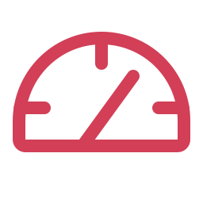
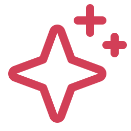

# An MCP endpoint for Odoo, without the guesswork
The Model Context Protocol is how modern AI assistants talk to external tools and data. This module turns your Odoo into an MCP-reachable source, so an assistant can search records, read details and run allowed operations in plain language.
Where most setups leave you stitching together API keys, client config files and permission checks by hand, MCP Server ships a Setup Assistant: it live-tests every link in the chain, tells you exactly what is missing, generates copy-ready config for your specific client, and lets you mint a scoped API key without leaving the page.
Guided Setup
Scoped Access
Any MCP Client
The Setup Assistant
Diagnostics, a live connection test, per-client config and one-click API keys, all on a single screen inside Odoo.
An access model that stays in your control
01 · Off by default
A global switch keeps every endpoint closed until you turn MCP on. Nothing is reachable by accident.
02 · Per-model, per-operation
Expose only the models you pick, and for each one allow read, create, update and delete independently. The AI never sees the rest.
03 · Audited and bounded
Every call is logged with model, operation, user and IP, protected by API-key auth and per-minute rate limits.
# Key Features & Capabilities
Setup Assistant
A single screen that diagnoses each step, live-tests the endpoints from your browser, and generates the exact config for Claude Desktop, Claude Code, VS Code and more.
Per-Model Permissions
A permission matrix where you enable models one by one and toggle read, create, update and delete for each. Access is a whitelist, never all-or-nothing.
Any MCP Client
Works with Claude web, desktop and mobile, Claude Code, Cursor, VS Code and any Model Context Protocol client, over stdio or streamable HTTP.

Keys & Rate Limits
Authentication uses standard Odoo API keys, scoped to a user. Configurable per-minute rate limits keep any client from overwhelming the server.
Full Audit Log
Every request is recorded with the model, operation, user, endpoint and IP address, so you always know what the AI accessed and when.

Safe by Default
Only mapped operations are allowed, private methods are blocked, an optional read-size ceiling protects your context, and uninstall leaves your database clean.
No query builder, no domain syntax. Your team asks in plain language and the model turns it into the right Odoo call, within the models and operations you allowed.
Ask
Which customers in Germany have no orders this year?
Show contacts tagged VIP that have no email.
What products are below their reorder point?
Report
Total sales by salesperson this quarter.
Count open opportunities per stage.
Group overdue invoices by customer.
Create
Add a contact for Meridian Labs in Berlin.
Create a product 'Trailhead Jacket' at 79 EUR.
Log a call activity on this lead for Friday.
Update
Set this order's delivery date to next Monday.
Change the vendor on PO 00042 to Northwind.
Mark these three tasks as done.
Totals and counts run server-side as aggregations, so a report over a million rows comes back as one number, never a million records dumped into the chat.
# Built for the people who live in Odoo
Sales ops
A rep on a call asks "which of my deals stalled 14+ days?", then "add a follow-up on the Meridian deal for tomorrow", without leaving the conversation.
Less data entry, a cleaner pipeline as a side effect.
Support
An agent mid-ticket asks "pull the last five orders for this customer", then "log a note with the resolution", and stays in one place instead of five screens.
Answers in seconds, no screen-hopping.
Finance
At month-end, "group overdue receivables by customer" and "list the credit notes issued this quarter" surface the problems before the close, not after.
Faster close, issues spotted earlier.
Each role sees only the models you exposed to them. A support key never reaches the general ledger unless you say so.
# One connection, every MCP client
The Model Context Protocol is an open standard. You connect Odoo once, and every client that speaks it works, today and the ones that ship next month.
Claude Desktop
Claude Code
Claude web & mobile
Cursor
VS Code
Cline
Zed
+ any MCP client
Switch AI providers whenever you like. The connection to Odoo stays the same, so there is no lock-in to unwind later.
Yes. MCP Server is released under LGPL-3 with the full source included, at no cost. There is no per-seat fee, no user cap and no paid tier to unlock features. You are free to run it, study it and adapt it within the terms of the license.
Any client that speaks the Model Context Protocol: Claude (web, desktop, mobile and Claude Code), Cursor, VS Code and others. The Setup Assistant generates the right configuration for each one, whether it connects over a local stdio bridge or a streamable HTTP endpoint.
Any Odoo that lets you install custom modules: Odoo.sh, self-hosted and on-premise servers, and local instances. Odoo Online (SaaS) does not allow custom modules, so the addon cannot be installed there, but the Setup Assistant still shows a direct-connection path for SaaS that talks to the standard API, with a clear note on its wider access.
Only what you allow. Access is a whitelist: a model is reachable only after you enable it, and each operation (read, create, update, delete) is toggled on its own. On top of that, requests run under a scoped API key with the user's own Odoo access rights, private methods are blocked, and every call is written to the audit log.
No. The addon adds its own configuration models and a settings section, and never rewrites your business data or standard screens. Any change an AI makes goes through the operations you explicitly allowed. Uninstalling removes what the module added and nothing else.
The addon exposes the Odoo side. Your AI client connects through the open-source mcp-server-odoo bridge, run locally for desktop clients or as a streamable HTTP endpoint for web and remote ones. The Setup Assistant writes the exact command and config for you, so there is nothing to figure out by hand.
Sveltware Solutions is a small studio building premium extensions for the Odoo backend. We work close to the metal, its OwlJS layer, rendering pipeline, and extension points, so we can change how Odoo feels without touching what keeps it stable: we build on the framework's own hooks, never override its internals.
Not one add-on but a connected ecosystem, themes, list and kanban tools, faceted search, printing, activity, and AI, under one design language. Every module is plug-and-play: zero config, no schema changes, clean uninstall, and proven on production-scale data.
It is built to be looked at, too: Apple-grade spacing, a flat-premium finish, strict WCAG 2.2. Our standard is effectiveness first, every module earns its place by making real work faster, and so does our support: you write to the engineers who built it, not a ticket queue.

Sveltware Solutions
Crafting pixel-perfect, zero-configuration enhancements for Odoo environments.
Six standards every Sveltware module must pass before it ships:
01 · Architecture
Extend, Never Override
We hook into Odoo's official extension points instead of monkey-patching internals. Standard views, workflows, and other modules keep working exactly as before.
02 · Data Safety
Fully Reversible
No schema rewrites, no data migration, no leftovers. Removing one of our modules returns your database to exactly the state it was in before.
03 · Onboarding
Zero Configuration
Install and use. Our modules read your existing setup, attributes, views, and access rights, instead of asking you to rebuild it in a settings screen.
04 · Performance
Fast on Real Data
We test against large, production-shaped databases, not demo data. Indexed domains, client-side caching, and lazy loading are the default, not an afterthought.
05 · Design
Native and Accessible
Every interface follows Odoo's native design language and meets WCAG 2.2: full keyboard support, real focus states, and contrast that holds up in light and dark mode.
06 · Longevity
Maintained Across Versions
We track Odoo's release cycle and update our suite for each major version, so upgrading Odoo never means abandoning the tools your team relies on.
# The Sveltware App Suite
One family of modules, designed to work seamlessly together. Click any app to open it on the Odoo Apps store in a new tab.
Flagship · Backend Themes
Omux & Lavend · Backend with Agentic AI
A complete redesign of the Odoo backend, available as Omux or Lavend, each running on both Community and Enterprise: dual sidebars, custom presets, hybrid start menus, dark/light modes, and WCAG 2.2 compliance, with agentic AI woven in.